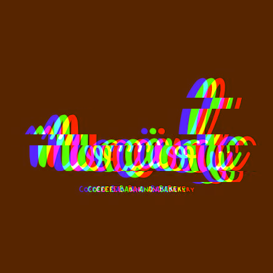

La Desaparición: Un Misterio Digital
Todo comenzó una mañana aparentemente normal. El equipo de Nocciola Digital llegó a la oficina y se encontró con un escenario desolador: la página web no cargaba, las redes sociales habían sido borradas y los correos de clientes indicaban que ya no nos encontraban en línea. El pánico inicial dio paso a la intriga cuando encontramos un enigmático USB.
Pruebas del Incidente
Mensaje del USB
"Tu negocio ha sido borrado de la existencia digital. Si quieres recuperarlo, deberás reinventarlo. Usa la tecnología, la creatividad y tu ingenio para traerlo de vuelta."
El mensaje era claro: estábamos ante un ataque digital sin precedentes, pero también ante una oportunidad de transformación.
Captura de Pantalla (Corrupta)

Intentamos recuperar datos, pero muchos archivos parecían dañados, con artefactos visuales que recordaban a un "glitch".
Registro de Red (Fragmentado)
Los registros de nuestra red interna mostraban picos de actividad inusuales antes de la desconexión total. Los datos recuperados estaban incompletos, como si alguien hubiera borrado las huellas.
Nuestro Renacimiento
Este evento nos obligó a mirar más allá. Decidimos no solo restaurar, sino reinventar Nocciola Digital. Aprovechamos para:
- Renovar nuestra Identidad Visual: Creamos un logo y una estética que reflejan nuestra resiliencia y dulzura.
- Implementar Medidas de Seguridad Avanzadas: Fortalecimos nuestra infraestructura digital para prevenir futuros incidentes.
- Innovar en Nuestros Productos: Lanzamos nuevas creaciones inspiradas en nuestra "resurrección" digital, como el pastel "Phoenix".
- Mejorar la Experiencia del Cliente: Implementamos herramientas como nuestro asistente virtual para una atención más cercana y eficiente.
La historia de Nocciola Digital es ahora una de adversidad superada y de un futuro digitalmente dulce y seguro. ¡Gracias por ser parte de nuestro renacer!
Ver nuestros deliciosos servicios